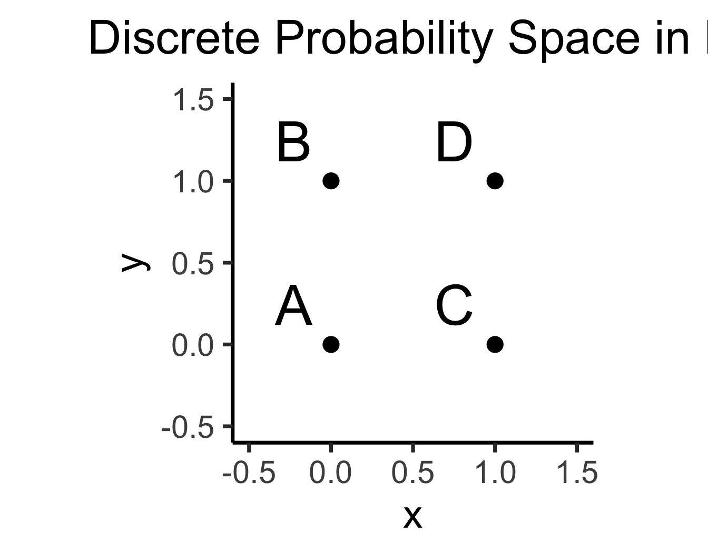
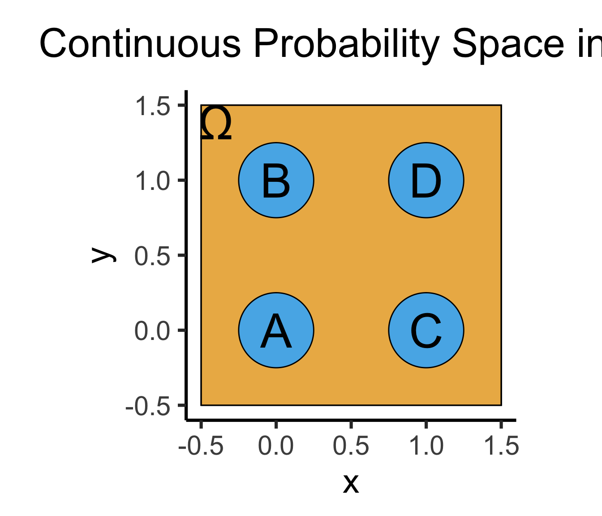
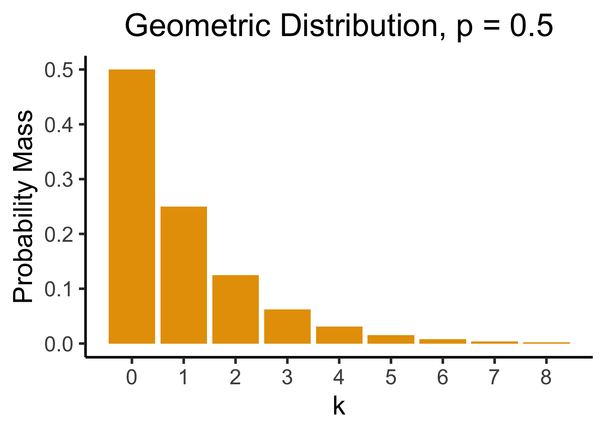
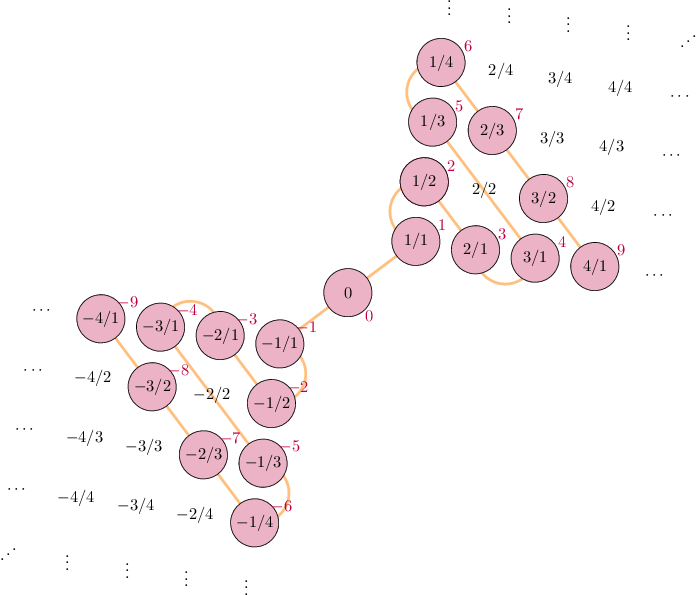

source("../dsan-globals/_globals.r")Week 4: Discrete Distributions
DSAN 5100: Probabilistic Modeling and Statistical Computing
Section 03
Class Sessions
“Rules” of Probability
Summarizing What We Know So Far
- Logic \(\rightarrow\) Set Theory \(\rightarrow\) Probability Theory
- Entirety of probability theory can be derived from two axioms:
- But what does “mutually exclusive” mean…?
Venn Diagrams: Sets
\[ \begin{align*} &A = \{1, 2, 3\}, \; B = \{4, 5, 6\} \\ &\implies A \cap B = \varnothing \end{align*} \]

\[ \begin{align*} &A = \{1, 2, 3, 4\}, \; B = \{3, 4, 5, 6\} \\ &\implies A \cap B = \{3, 4\} \end{align*} \]
Venn Diagrams: Events (Dice)
\[ \begin{align*} A &= \{\text{Roll is even}\} = \{2, 4, 6\} \\ B &= \{\text{Roll is odd}\} = \{1, 3, 5\} \\ C &= \{\text{Roll is in Fibonnaci sequence}\} = \{1, 2, 3, 5\} \end{align*} \]
| Set 1 | Set 2 | Intersection | Mutually Exclusive? | Can Happen Simultaneously? |
|---|---|---|---|---|
| \(A\) | \(B\) | \(A \cap B = \varnothing\) | Yes | No |
| \(A\) | \(C\) | \(A \cap C = \{2\}\) | No | Yes |
| \(B\) | \(C\) | \(B \cap C = \{1, 3, 5\}\) | No | Yes |
“Rules” of Probability
(Remember: not “rules” but “facts resulting from the logic \(\leftrightarrow\) probability connection”)
What is Conditional Probability?
Conditional Probability
- Usually if someone asks you probabilistic questions, like
- “What is the likelihood that [our team] wins?”
- “Do you think it will rain tomorrow?”
- You don’t guess a random number, you consider and incorporate evidence.
- Example: \(\Pr(\text{rain})\) on its own, no other info? Tough question… maybe \(0.5\)?
- In reality, we would think about
- \(\Pr(\text{rain} \mid \text{month of the year})\)
- \(\Pr(\text{rain} \mid \text{where we live})\)
- \(\Pr(\text{rain} \mid \text{did it rain yesterday?})\)
- Psychologically, breaks down into two steps: (1) Think of baseline probability, (2) Update baseline to incorporate relevant evidence (more on this in a bit…)
- Also recall: all probability is conditional probability, even if just conditioned on “something happened” (\(\Omega\), the thing defined so \(\Pr(\Omega) = 1\))
Naïve Definition 2.0
| World Name | Weather in World | Likelihood of Rain Today |
|---|---|---|
| \(R\) | Rained for the past 5 days | \(\Pr(\text{rain} \mid R) > 0.5\) |
| \(M\) | Mix of rain and non-rain over past 5 days | \(\Pr(\text{rain} \mid M) \approx 0.5\) |
| \(S\) | Sunny for the past 5 days | \(\Pr(\text{rain} \mid S) < 0.5\) |
Law of Total Probability
Suppose the events \(B_1, \ldots, B_k\) form a partition of the space \(\Omega\) and \(\Pr(B_j) > 0 \forall j\).
Then, for every event \(A\) in \(\Omega\),
\[ \Pr(A) = \sum_{i=1}^k \Pr(B_j)\Pr(A \mid B_j) \]
Probability of an event is the sum of its conditional probabilities across all conditions.
In other words: \(A\) is some event, \(B_1, \ldots, B_n\) are mutually exclusive events filling entire sample-space, then
\[ \Pr(A) = \Pr(A \mid B_1)\Pr(B_1) + \Pr(A \mid B_2)\Pr(B_2) + \cdots + \Pr(A \mid B_n)\Pr(B_n) \]
i.e. Compute the probability by summing over all possible cases.
Draw pic on board!
Example
- Probability of completing job on time with and without rain: 0.42 and 0.9.
- Probability of rain is 0.45. What is probability job will be completed on time?
- \(A\) = job will be completed on time, \(B\) = rain
\[ \Pr(B) = 0.45 \implies \Pr(B^c) = 1 - \Pr(B) = 0.55. \]
- Note: Events \(B\) and \(B^c\) are exclusive and form partitions of the sample space \(S\)
- We know \(\Pr(A \mid B) = 0.24\), \(\Pr(A \mid B^c) = 0.9\).
- By the Law of Total Probability, we have
\[ \begin{align*} \Pr(A) &= \Pr(B)\Pr(A \mid B) + \Pr(B^c)\Pr(A \mid B^c) \\ &= 0.45(0.42) + 0.55(0.9) = 0.189 + 0.495 = 0684. \end{align*} \]
So, the probability that the job will be completed on time is 0.684. (source)
Bayes’ Theorem and its Implications
Deriving Bayes’ Theorem
- Literally just a re-writing of the conditional probability definition (don’t be scared)!
- For two events \(A\) and \(B\), definition of conditional probability says that
\[ \begin{align*} \Pr(A \mid B) &= \frac{\Pr(A \cap B)}{\Pr(B)} \tag{1} \\ \Pr(B \mid A) &= \frac{\Pr(B \cap A)}{\Pr(A)} \tag{2} \end{align*} \]
- Multiply to get rid of fractions
\[ \begin{align*} \Pr(A \mid B)\Pr(B) &= \Pr(A \cap B) \tag{1*} \\ \Pr(B \mid A)\Pr(A) &= \Pr(B \cap A) \tag{2*} \end{align*} \]
- But set intersection is associative (just like multiplication…), \(A \cap B = B \cap A\)! So, we know LHS of \((\text{1*})\) = LHS of \((\text{2*})\):
\[ \Pr(A \mid B)\Pr(B) = \Pr(B \mid A)\Pr(A) \]
- Divide both sides by \(\Pr(B)\) to get a new definition of \(\Pr(A \mid B)\), Bayes’ Theorem!
\[ \boxed{\Pr(A \mid B) = \frac{\Pr(B \mid A)\Pr(A)}{\Pr(B)}} \]
Why Is This Helpful?
- In words (as exciting as I can make it, for now): Bayes’ Theorem allows us to take information about \(B \mid A\) and use it to infer information about \(A \mid B\)
- It isn’t until you work through some examples that this becomes mind-blowing, the most powerful equation we have for inferring unknowns from knowns…
- Consider \(A = \{\text{person has disease}\}\), \(B = \{\text{person tests positive for disease}\}\)
- Is \(A\) observable on its own? No, but…
- Is \(B\) observable on its own? Yes, and
- Can we infer info about \(A\) from knowing \(B\)? Also Yes, thx Bayes!
- Therefore, we can use \(B\) to infer information about \(A\), i.e., calculate \(\Pr(A \mid B)\)
Why Is This Helpful for Data Science?
- It merges probability theory and hypothesis testing into a single framework:
\[ \Pr(\text{hypothesis} \mid \text{data}) = \frac{\Pr(\text{data} \mid \text{hypothesis})\Pr(\text{hypothesis})}{\Pr(\text{data})} \]
Probability Forwards and Backwards
Two discrete RVs:
- Weather on a given day, \(W \in \{\textsf{Rain},\textsf{Sun}\}\)
- Action that day, \(A \in \{\textsf{Go}, \textsf{Stay}\}\): go to party or stay in and watch movie
Data-generating process: if \(\textsf{Sun}\), rolls a die \(R\) and goes out unless \(R = 6\). If \(\textsf{Rain}\), flips a coin and goes out if \(\textsf{H}\).
Probabilistic Graphical Model (PGM):

Probability Forwards and Backwards
So, if we know \(W = \textsf{Sun}\), what is \(P(A = \textsf{Go})\)? \[ \begin{align*} P(A = \textsf{Go} \mid W) &= 1 - P(R = 6) \\ &= 1 - \frac{1}{6} = \frac{5}{6} \end{align*} \]
Conditional probability lets us go forwards (left to right):

But what if we want to perform inference going backwards?
Probability Forwards and Backwards
- If we see Ana at the party, we know \(A = \textsf{Go}\)
- What does this tell us about the weather?
- Intuitively, we should increase our degree of belief that \(W = \textsf{Sun}\). But, by how much?
- We don’t know \(P(W \mid A)\), only \(P(A \mid W)\)…
Probability Forwards and Backwards
\[ P(W = \textsf{Sun} \mid A = \textsf{Go}) = \frac{\overbrace{P(A = \textsf{Go} \mid W = \textsf{Sun})}^{5/6~ ✅}\overbrace{P(W = \textsf{Sun})}^{❓}}{\underbrace{P(A = \textsf{Go})}_{❓}} \]
- We’ve seen \(P(W = \textsf{Sun})\) before, it’s our prior: the probability without having any additional relevant knowledge. So, let’s say 50/50. \(P(W = \textsf{Sun}) = \frac{1}{2}\)
- If we lived in Seattle, we could pick \(P(W = \textsf{Sun}) = \frac{1}{4}\)
Probability Forwards and Backwards
\[ P(W = \textsf{Sun} \mid A = \textsf{Go}) = \frac{\overbrace{P(A = \textsf{Go} \mid W = \textsf{Sunny})}^{5/6~ ✅}\overbrace{P(W = \textsf{Sun})}^{1/2~ ✅}}{\underbrace{P(A = \textsf{Go})}_{❓}} \]
- \(P(A = \textsf{Go})\) is trickier: the probability that Ana goes out regardless of what the weather is. But there are only two possible weather outcomes! So we just compute
\[ \begin{align*} &P(A = \textsf{Go}) = \sum_{\omega \in S(W)}P(A = \textsf{Go}, \omega) = \sum_{\omega \in S(W)}P(A = \textsf{Go} \mid \omega)P(\omega) \\ &= P(A = \textsf{Go} \mid W = \textsf{Rain})P(W = \textsf{Rain}) + P(A = \textsf{Go} \mid W = \textsf{Sun})P(W = \textsf{Sun}) \\ &= \left( \frac{1}{2} \right)\left( \frac{1}{2} \right) + \left( \frac{5}{6} \right)\left( \frac{1}{2} \right) = \frac{1}{4} + \frac{5}{12} = \frac{2}{3} \end{align*} \]
Putting it All Together
\[ \begin{align*} P(W = \textsf{Sun} \mid A = \textsf{Go}) &= \frac{\overbrace{P(A = \textsf{Go} \mid W = \textsf{Sunny})}^{3/4~ ✅}\overbrace{P(W = \textsf{Sun})}^{1/2~ ✅}}{\underbrace{P(A = \textsf{Go})}_{1/2~ ✅}} \\ &= \frac{\left(\frac{3}{4}\right)\left(\frac{1}{2}\right)}{\frac{1}{2}} = \frac{\frac{3}{8}}{\frac{1}{2}} = \frac{3}{4}. \end{align*} \]
- Given that we see Ana at the party, we should update our beliefs, so that \(P(W = \textsf{Sun}) = \frac{3}{4}, P(W = \textsf{Rain}) = \frac{1}{4}\).
A Scarier Example
- Bo worries he has a rare disease. He takes a test with 99% accuracy and tests positive. What’s the probability Bo has the disease? (Intuition: 99%? …Let’s do the math!)
- \(H \in \{\textsf{sick}, \textsf{healthy}\}, T \in \{\textsf{T}^+, \textsf{T}^-\}\)
- The test: 99% accurate. \(\Pr(T = \textsf{T}^+ \mid H = \textsf{sick}) = 0.99\), \(\Pr(T = \textsf{T}^- \mid H = \textsf{healthy}) = 0.99\).
- The disease: 1 in 10K. \(\Pr(H = \textsf{sick}) = \frac{1}{10000}\)
- What do we want to know? \(\Pr(H = \textsf{sick} \mid T = \textsf{T}^+)\)
- How do we get there?

\(H\) for health, \(T\) for test result
Photo credit: https://thedatascientist.com/wp-content/uploads/2019/04/reverend-thomas-bayes.jpg
A Scarier Example
\[ \begin{align*} \Pr(H = \textsf{sick} \mid T = \textsf{T}^+) &= \frac{\Pr(T = \textsf{T}^+ \mid H = \textsf{sick})\Pr(H = \textsf{sick})}{\Pr(T = \textsf{T}^+)} \\ &= \frac{(0.99)\left(\frac{1}{10000}\right)}{(0.99)\left( \frac{1}{10000} \right) + (0.01)\left( \frac{9999}{10000} \right)} \end{align*} \]
p_sick <- 1 / 10000
p_healthy <- 1 - p_sick
p_pos_given_sick <- 0.99
p_neg_given_sick <- 1 - p_pos_given_sick
p_neg_given_healthy <- 0.99
p_pos_given_healthy <- 1 - p_neg_given_healthy
numer <- p_pos_given_sick * p_sick
denom1 <- numer
denom2 <- p_pos_given_healthy * p_healthy
final_prob <- numer / (denom1 + denom2)
final_prob[1] 0.009803922- … Less than 1% 😱
Proof in the Pudding
- Let’s generate a dataset of 5,000 people, using \(\Pr(\textsf{Disease}) = \frac{1}{10000}\)
Code
library(tibble)
library(dplyr)
# Disease rarity
p_disease <- 1 / 10000
# 1K people
num_people <- 10000
# Give them ids
ppl_df <- tibble(id=seq(1,num_people))
# Whether they have the disease or not
has_disease <- rbinom(num_people, 1, p_disease)
ppl_df <- ppl_df %>% mutate(has_disease=has_disease)
ppl_df |> head()| id | has_disease |
|---|---|
| 1 | 0 |
| 2 | 0 |
| 3 | 0 |
| 4 | 0 |
| 5 | 0 |
| 6 | 0 |
Binary Variable Trick
- Since
has_disease\(\in \{0, 1\}\), we can usesum(has_disease)to obtain the count of people with the disease, ormean(has_disease)to obtain the proportion of people who have the disease
- To see this (or, if you forget in the future), just make a fake dataset with a binary variable and 3 rows, and think about sums vs. means of that variable:
Code
binary_df <- tibble(
id=c(1,2,3),
x=c(0,1,0)
)
binary_df| id | x |
|---|---|
| 1 | 0 |
| 2 | 1 |
| 3 | 0 |
Taking the sum tells us: one row where x == 1:
Code
sum(binary_df$x)[1] 1Taking the mean tells us: 1/3 of rows have x == 1:
Code
mean(binary_df$x)[1] 0.3333333Applying This to the Disease Data
- If we want the number of people who have the disease:
Code
# Compute the *number* of people who have the disease
sum(ppl_df$has_disease)[1] 1- If we want the proportion of people who have the disease:
Code
# Compute the *proportion* of people who have the disease
mean(ppl_df$has_disease)[1] 1e-04- (And if you dislike scientific notation like I do…)
Code
format(mean(ppl_df$has_disease), scientific = FALSE)[1] "0.0001"(Foreshadowing Monte Carlo methods)
Data-Generating Process: Test Results
Code
library(dplyr)
# Data Generating Process
take_test <- function(is_sick) {
if (is_sick) {
return(rbinom(1,1,p_pos_given_sick))
} else {
return(rbinom(1,1,p_pos_given_healthy))
}
}
ppl_df['test_result'] <- unlist(lapply(ppl_df$has_disease, take_test))
num_positive <- sum(ppl_df$test_result)
p_positive <- mean(ppl_df$test_result)
writeLines(paste0(num_positive," positive tests / ",num_people," total = ",p_positive))119 positive tests / 10000 total = 0.0119#disp(ppl_df %>% head(50), obs_per_page = 3)
ppl_df |> head()| id | has_disease | test_result |
|---|---|---|
| 1 | 0 | 0 |
| 2 | 0 | 0 |
| 3 | 0 | 0 |
| 4 | 0 | 0 |
| 5 | 0 | 0 |
| 6 | 0 | 0 |
Zooming In On Positive Tests
pos_ppl <- ppl_df %>% filter(test_result == 1)
#disp(pos_ppl, obs_per_page = 10)
pos_ppl |> head()| id | has_disease | test_result |
|---|---|---|
| 8 | 0 | 1 |
| 34 | 0 | 1 |
| 244 | 0 | 1 |
| 300 | 0 | 1 |
| 346 | 0 | 1 |
| 453 | 0 | 1 |
- Bo doesn’t have it, and neither do 110 of the 111 total people who tested positive!
- But, in the real world, we only observe \(T\)

Zooming In On Disease-Havers
- What if we look at only those who actually have the disease? Maybe the cost of 111 people panicking is worth it if we correctly catch those who do have it?
Code
#disp(ppl_df[ppl_df$has_disease == 1,])
ppl_df[ppl_df$has_disease == 1,]| id | has_disease | test_result |
|---|---|---|
| 4715 | 1 | 1 |
Is this always going to be the case?
Num with disease: 1
Proportion with disease: 0.0002
Number of positive tests: 48| id | has_disease | test_result |
|---|---|---|
| 352 | 1 | 1 |
#disp(simulate_disease(5000, 1/10000))
simulate_disease(5000, 1/10000)Num with disease: 1
Proportion with disease: 0.0002
Number of positive tests: 44| id | has_disease | test_result |
|---|---|---|
| 4924 | 1 | 1 |
Worst-Case Worlds
for (i in seq(1,1000)) {
sim_result <- simulate_disease(5000, 1/10000, verbose = FALSE, return_all_detected = FALSE, return_df = FALSE, return_info = TRUE)
if (!sim_result$all_detected) {
writeLines(paste0("World #",i," / 1000 (",sim_result$num_people," people):"))
print(sim_result$df)
writeLines('\n')
}
}World #250 / 1000 (5000 people):
# A tibble: 1 × 3
id has_disease test_result
<int> <int> <int>
1 1017 1 0
World #436 / 1000 (5000 people):
# A tibble: 1 × 3
id has_disease test_result
<int> <int> <int>
1 3406 1 0
World #682 / 1000 (5000 people):
# A tibble: 1 × 3
id has_disease test_result
<int> <int> <int>
1 1350 1 0format(4 / 5000000, scientific = FALSE)[1] "0.0000008"How unlikely is this? Math:
\[ \begin{align*} \Pr(\textsf{T}^- \cap \textsf{Sick}) &= \Pr(\textsf{T}^- \mid \textsf{Sick})\Pr(\textsf{Sick}) \\ &= (0.01)\frac{1}{10000} \\ &= \frac{1}{1000000} \end{align*} \]
Computers:
result_df <- simulate_disease(1000000, 1/10000, verbose = FALSE, return_full_df = TRUE)
false_negatives <- result_df[result_df$has_disease == 1 & result_df$test_result == 0,]
num_false_negatives <- nrow(false_negatives)
writeLines(paste0("False Negatives: ",num_false_negatives,", Total Cases: ", nrow(result_df)))False Negatives: 2, Total Cases: 1000000false_negative_rate <- num_false_negatives / nrow(result_df)
false_negative_rate_decimal <- format(false_negative_rate, scientific = FALSE)
writeLines(paste0("False Negative Rate: ", false_negative_rate_decimal))False Negative Rate: 0.000002(Perfect match!)
Bayes: Takeaway
- Bayesian approach allows new evidence to be weighed against existing evidence, with statistically principled way to derive these weights:
\[ \begin{array}{ccccc} \Pr_{\text{post}}(\mathcal{H}) &\hspace{-6mm}\propto &\hspace{-6mm} \Pr(X \mid \mathcal{H}) &\hspace{-6mm} \times &\hspace{-6mm} \Pr_{\text{pre}}(\mathcal{H}) \\ \text{Posterior} &\hspace{-6mm}\propto &\hspace{-6mm}\text{Evidence} &\hspace{-6mm} \times &\hspace{-6mm} \text{Prior} \end{array} \]
Monte Carlo Methods: Overview
- You already saw an example, in our rare disease simulation!
- Generally, using computers (rather than math, “by hand”) to estimate probabilistic quantities
Pros:
- Most real-world processes have no analytic solution
- Step-by-step breakdown of complex processes
Cons:
- Can require immense computing power
- ⚠️ Can generate incorrect answers ⚠️
By step-by-step I mean, a lot of the time you are just walking through, generating the next column using previously-generated columns. Like we did in the example above, generating test_result based on has_disease.
Birthday Problem
- 30 people gather in a room together. What is the probability that two of them share the same birthday?
- Analytic solution is fun, but requires some thought… Monte Carlo it!
Code
gen_bday_room <- function(room_num=NULL) {
num_people <- 30
num_days <- 366
ppl_df <- tibble(id=seq(1,num_people))
birthdays <- sample(1:num_days, num_people,replace = T)
ppl_df['birthday'] <- birthdays
if (!is.null(room_num)) {
ppl_df <- ppl_df %>% mutate(room_num=room_num) %>% relocate(room_num)
}
return(ppl_df)
}
ppl_df <- gen_bday_room(1)
#disp(ppl_df %>% head())
ppl_df |> head()| room_num | id | birthday |
|---|---|---|
| 1 | 1 | 169 |
| 1 | 2 | 57 |
| 1 | 3 | 216 |
| 1 | 4 | 111 |
| 1 | 5 | 359 |
| 1 | 6 | 236 |
Birthday Problem
# Inefficient version (return_num=FALSE) is for: if you want tibbles of *all* shared bdays for each room
get_shared_bdays <- function(df, is_grouped=NULL, return_num=FALSE, return_bool=FALSE) {
bday_pairs <- tibble()
for (i in 1:(nrow(df)-1)) {
i_data <- df[i,]
i_bday <- i_data$birthday
for (j in (i+1):nrow(df)) {
j_data <- df[j,]
j_bday <- j_data$birthday
# Check if they're the same
same_bday <- i_bday == j_bday
if (same_bday) {
if (return_bool) {
return(1)
}
pair_data <- tibble(i=i,j=j,bday=i_bday)
if (!is.null(is_grouped)) {
i_room <- i_data$room_num
pair_data['room'] <- i_room
}
bday_pairs <- bind_rows(bday_pairs, pair_data)
}
}
}
if (return_bool) {
return(0)
}
if (return_num) {
return(nrow(bday_pairs))
}
return(bday_pairs)
}
#get_shared_bdays(ppl_df)
get_shared_bdays(ppl_df)| i | j | bday |
|---|---|---|
| 8 | 23 | 270 |
Let’s try more rooms…
# Get tibbles for each room
library(purrr)
gen_bday_rooms <- function(num_rooms) {
rooms_df <- tibble()
for (r in seq(1, num_rooms)) {
cur_room <- gen_bday_room(r)
rooms_df <- bind_rows(rooms_df, cur_room)
}
return(rooms_df)
}
num_rooms <- 10
rooms_df <- gen_bday_rooms(num_rooms)
rooms_df %>% group_by(room_num) %>% group_map(~ get_shared_bdays(.x, is_grouped=TRUE))[[1]]
# A tibble: 2 × 3
i j bday
<int> <int> <int>
1 2 16 172
2 3 26 52
[[2]]
# A tibble: 1 × 3
i j bday
<int> <int> <int>
1 3 20 70
[[3]]
# A tibble: 0 × 0
[[4]]
# A tibble: 0 × 0
[[5]]
# A tibble: 2 × 3
i j bday
<int> <int> <int>
1 5 20 209
2 17 18 226
[[6]]
# A tibble: 1 × 3
i j bday
<int> <int> <int>
1 3 23 366
[[7]]
# A tibble: 1 × 3
i j bday
<int> <int> <int>
1 2 9 364
[[8]]
# A tibble: 1 × 3
i j bday
<int> <int> <int>
1 6 20 219
[[9]]
# A tibble: 2 × 3
i j bday
<int> <int> <int>
1 4 29 303
2 12 21 353
[[10]]
# A tibble: 1 × 3
i j bday
<int> <int> <int>
1 3 12 303Number of shared birthdays per room:
# Now just get the # shared bdays
shared_per_room <- rooms_df %>%
group_by(room_num) %>%
group_map(~ get_shared_bdays(.x, is_grouped = TRUE, return_num=TRUE))
shared_per_room <- unlist(shared_per_room)
shared_per_room [1] 2 1 0 0 2 1 1 1 2 1- \(\widehat{\Pr}(\text{shared})\)
sum(shared_per_room > 0) / num_rooms[1] 0.8- How about A THOUSAND ROOMS?
num_rooms_many <- 100
many_rooms_df <- gen_bday_rooms(num_rooms_many)
anyshared_per_room <- many_rooms_df %>%
group_by(room_num) %>%
group_map(~ get_shared_bdays(.x, is_grouped = TRUE, return_bool = TRUE))
anyshared_per_room <- unlist(anyshared_per_room)
anyshared_per_room [1] 1 0 1 1 1 0 1 1 1 0 0 1 1 0 1 0 1 1 1 0 1 0 1 1 0 0 1 1 0 0 1 1 0 1 1 1 1
[38] 1 1 1 1 1 1 1 0 1 1 1 1 1 1 1 1 1 1 0 1 1 0 1 1 1 1 0 1 1 1 1 1 0 1 0 1 1
[75] 1 1 1 0 1 1 1 0 1 1 1 1 0 1 0 1 1 1 1 1 1 1 1 1 1 0- \(\widehat{\Pr}(\text{shared bday})\)?
# And now the probability estimate
sum(anyshared_per_room > 0) / num_rooms_many[1] 0.76- The analytic solution: \(\Pr(\text{shared} \mid k\text{ people in room}) = 1 - \frac{366!}{366^{k}(366-k)!}\)
- In our case: \(1 - \frac{366!}{366^{30}(366-30)!} = 1 - \frac{366!}{366^{30}336!} = 1 - \frac{\prod_{i=337}^{366}i}{366^{30}}\)
Rcan juust barely handle these numbers:
(exact_solution <- 1 - (prod(seq(337,366))) / (366^30))[1] 0.7053034Wrapping Up

Final Note: Functions of Random Variables
- \(X \sim U[0,1], Y \sim U[0,1]\).
- \(P(Y < X^2)\)?
- The hard way: solve analytically
- The easy way: simulate!
Probability Distributions in General
Discrete vs. Continuous
- Discrete = “Easy mode”: Based (intuitively) on sets
- \(\Pr(A)\): Four marbles \(\{A, B, C, D\}\) in box, all equally likely, what is the probability I pull out \(A\)?
library(tibble)
library(ggplot2)
disc_df <- tribble(
~x, ~y, ~label,
0, 0, "A",
0, 1, "B",
1, 0, "C",
1, 1, "D"
)
ggplot(disc_df, aes(x=x, y=y, label=label)) +
geom_point(size=g_pointsize) +
geom_text(
size=g_textsize,
hjust=1.5,
vjust=-0.5
) +
xlim(-0.5,1.5) + ylim(-0.5,1.5) +
coord_fixed() +
dsan_theme("quarter") +
labs(
title="Discrete Probability Space in N"
)
\[ \Pr(A) = \underbrace{\frac{|\{A\}|}{|\Omega|}}_{\mathclap{\small \text{Probability }\textbf{mass}}} = \frac{1}{|\{A,B,C,D\}|} = \frac{1}{4} \]
- Continuous = “Hard mode”: Based (intuitively) on areas
- \(\Pr(A)\): If I throw a dart at this square, what is the probability that I hit region \(A\)?
library(ggforce)
ggplot(disc_df, aes(x=x, y=y, label=label)) +
xlim(-0.5,1.5) + ylim(-0.5,1.5) +
geom_rect(aes(xmin = -0.5, xmax = 1.5, ymin = -0.5, ymax = 1.5), fill=cbPalette[1], color="black", alpha=0.3) +
geom_circle(aes(x0=x, y0=y, r=0.25), fill=cbPalette[2]) +
coord_fixed() +
dsan_theme("quarter") +
geom_text(
size=g_textsize,
#hjust=1.75,
#vjust=-0.75
) +
geom_text(
data=data.frame(label="Ω"),
aes(x=-0.4,y=1.39),
parse=TRUE,
size=g_textsize
) +
labs(
title=expression("Continuous Probability Space in "*R^2)
)
\[ \Pr(A) = \underbrace{\frac{\text{Area}(\{A\})}{\text{Area}(\Omega)}}_{\mathclap{\small \text{Probability }\textbf{density}}} = \frac{\pi r^2}{s^2} = \frac{\pi \left(\frac{1}{4}\right)^2}{4} = \frac{\pi}{64} \]
The Technical Difference tl;dr
- Countable Sets: Can be put into 1-to-1 correspondence with the natural numbers \(\mathbb{N}\)
- What are you doing when you’re counting? Saying “first”, “second”, “third”, …
- You’re pairing each object with a natural number! \(\{(\texttt{a},1),(\texttt{b},2),\ldots,(\texttt{z},26)\}\)
- Uncountable Sets: Cannot be put into 1-to-1 correspondence with the natural numbers.
- \(\mathbb{R}\) is uncountable. Intuition: Try counting the real numbers. Proof1 \[ \text{Assume }\exists (f: \mathbb{R} \leftrightarrow \mathbb{N}) = \begin{array}{|c|c|c|c|c|c|c|}\hline \mathbb{R} & & & & & & \Leftrightarrow \mathbb{N} \\ \hline \color{orange}{3} & . & 1 & 4 & 1 & \cdots & \Leftrightarrow 1 \\\hline 4 & . & \color{orange}{9} & 9 & 9 & \cdots & \Leftrightarrow 2 \\\hline 0 & . & 1 & \color{orange}{2} & 3 & \cdots &\Leftrightarrow 3 \\\hline 1 & . & 2 & 3 & \color{orange}{4} & \cdots & \Leftrightarrow 4 \\\hline \vdots & \vdots & \vdots & \vdots & \vdots & \ddots & \vdots \\\hline \end{array} \overset{\color{blue}{y_{[i]}} = \color{orange}{x_{[i]}} \overset{\mathbb{Z}_{10}}{+} 1}{\longrightarrow} \color{blue}{y = 4.035 \ldots} \Leftrightarrow \; ? \]
Fun math challenge: Is \(\mathbb{Q}\) countable? See this appendix slide for why the answer is yes, despite the fact that \(\forall x, y \in \mathbb{Q} \left[ \frac{x+y}{2} \in \mathbb{Q} \right]\)
The Practical Difference
- This part of the course (discrete probability): \(\Pr(X = v), v \in \mathcal{R}_X \subseteq \mathbb{N}\)
- Example: \(\Pr(\)\() = \Pr(X = 3), 3 \in \{1,2,3,4,5,6\} \subseteq \mathbb{N}\)
- Next part of the course (continuous probability): \(\Pr(X \in V), v \subseteq \mathbb{R}\)
- Example: \(\Pr(X \geq 2\pi) = \Pr(X \in [\pi,\infty)), [\pi,\infty) \subseteq \mathbb{R}\)
- Why do they have to be in separate parts?
\[ \Pr(X = 2\pi) = \frac{\text{Area}(\overbrace{2\pi}^{\mathclap{\small \text{Single point}}})}{\text{Area}(\underbrace{\mathbb{R}}_{\mathclap{\small \text{(Uncountably) Infinite set of points}}})} = 0 \]
Probability Mass vs. Probability Density
- Cumulative Distribution Function (CDF): \(F_X(v) = \Pr(X \leq v)\)
- For discrete RV \(X\), Probability Mass Function (pmf) \(p_X(v)\): \[ \begin{align*} p_X(v) &= \Pr(X = v) = F_X(v) - F_X(v-1) \\ \implies F_X(v) &= \sum_{\{w \in \mathcal{R}_X: \; w \leq v\}}p_X(w) \end{align*} \]
- For continuous RV \(X\) (\(\mathcal{R}_X \subseteq \mathbb{R}\)), Probability Density Function (pdf) \(f_X(v)\): \[ \begin{align*} f_X(v) &= \frac{d}{dx}F_X(v) \\ \implies F_X(v) &= \int_{-\infty}^v f_X(w)dw \end{align*} \]
Frustratingly, the CDF/pmf/pdf is usually written using \(X\) and \(x\), like \(F_X(x) = \Pr(X \leq x)\). To me this is extremely confusing, since the capitalized \(X\) is a random variable (not a number) while the lowercase \(x\) is some particular value, like \(3\). So, to emphasize this difference, I use \(X\) for the RV and \(v\) for the value at which we’re checking the CDF/pmf/pdf.
Also note the capitalized CDF but lowercase pmf/pdf, matching the mathematical notation where \(f_X(v)\) is the derivative of \(F_X(v)\).
Probability Density \(\neq\) Probability
- BEWARE: \(f_X(v) \neq \Pr(X = v)\)!
- Long story short, for continuous variables, \(\Pr(X = v) = 0\)2
- Hence, we instead construct a PDF \(f_X(v)\) that enables us to calculate \(\Pr(X \in [a,b])\) by integrating: \(f_X(v)\) is whatever function satisfies \(\Pr(X \in [a,b]) = \int_{a}^bf_X(v)dv\).
- i.e., instead of \(p_X(v) = \Pr(X = v)\) from discrete world, the relevant function here is \(f_X(v)\), the probability density of \(X\) at \(v\).
- If we really want to get something like the “probability of a value” in a continuous space 😪, we can get something kind of like this by using fancy limits \[ f_X(v) = \lim_{\varepsilon \to 0}\frac{P(X \in [v-\varepsilon, v + \varepsilon])}{2\varepsilon} = \lim_{\varepsilon \to 0}\frac{F(v + \varepsilon) - F(v - \varepsilon)}{2\varepsilon} = \frac{d}{dx}F_X(v) \]
Common Discrete Distributions
- Bernoulli
- Binomial
- Geometric
Bernoulli Distribution
- Single trial with two outcomes, “success” (1) or “failure” (0): basic model of a coin flip (heads = 1, tails = 0)
- \(X \sim \text{Bern}({\color{purple} p}) \implies \mathcal{R}_X = \{0,1\}, \; \Pr(X = 1) = {\color{purple}p}\).
library(ggplot2)
library(tibble)
bern_tibble <- tribble(
~Outcome, ~Probability, ~Color,
"Failure", 0.2, cbPalette[1],
"Success", 0.8, cbPalette[2]
)
ggplot(data = bern_tibble, aes(x=Outcome, y=Probability)) +
geom_bar(aes(fill=Outcome), stat = "identity") +
dsan_theme("half") +
labs(
y = "Probability Mass"
) +
scale_fill_manual(values=c(cbPalette[1], cbPalette[2])) +
remove_legend()Binomial Distribution
- Number of successes in \({\color{purple}N}\) Bernoulli trials. \(X \sim \text{Binom}({\color{purple}N},{\color{purple}k},{\color{purple}p}) \implies \mathcal{R}_X = \{0, 1, \ldots, N\}\)
- \(P(X = k) = \binom{N}{k}p^k(1-p)^{N-k}\): probability of \(k\) successes out of \(N\) trials.
- \(\binom{N}{k} = \frac{N!}{k!(N-k)!}\): “Binomial coefficient”. How many groups of size \(k\) can be formed?3
Visualizing the Binomial
Code
k <- seq(0, 10)
prob <- dbinom(k, 10, 0.5)
bar_data <- tibble(k, prob)
ggplot(bar_data, aes(x=k, y=prob)) +
geom_bar(stat="identity", fill=cbPalette[1]) +
labs(
title="Binomial Distribution, N = 10, p = 0.5",
y="Probability Mass"
) +
scale_x_continuous(breaks=seq(0,10)) +
dsan_theme("half")So who can tell me, from this plot, the approximate probability of getting 4 heads when flipping a coin 10 times?
Multiple Classes: Multinomial Distribution
- Bernoulli only allows two outcomes: success or failure.
- What if we’re predicting soccer match outcomes?
- \(X_i \in \{\text{Win}, \text{Loss}, \text{Draw}\}\)
- Categorical Distribution: Generalization of Bernoulli to \(k\) outcomes. \(X \sim \text{Categorical}(\mathbf{p} = \{p_1, p_2, \ldots, p_k\}), \sum_{i=1}^kp_i = 1\).
- \(P(X = k) = p_k\)
- Multinomial Distribution: Generalization of Binomial to \(k\) outcomes.
- \(\mathbf{X} \sim \text{Multinom}(N,k,\mathbf{p}=\{p_1,p_2,\ldots,p_k\}), \sum_{i=1}^kp_i=1\)
- \(P(\mathbf{X} = \{x_1,x_2\ldots,x_k\}) = \frac{N!}{x_1!x_2!\cdots x_k!}p_1^{x_1}p_2^{x_2}\cdots p_k^{x_k}\)
- \(P(\text{30 wins}, \text{4 losses}, \text{4 draws}) = \frac{38!}{30!4!4!}p_{\text{win}}^{30}p_{\text{lose}}^4p_{\text{draw}}^4\).
Geometric Distribution
- Geometric: Likelihood that we need \({\color{purple}k}\) trials to get our first success. \(X \sim \text{Geom}({\color{purple}k},{\color{purple}p}) \implies \mathcal{R}_X = \{0, 1, \ldots\}\)
- \(P(X = k) = \underbrace{(1-p)^{k-1}}_{\small k - 1\text{ failures}}\cdot \underbrace{p}_{\mathclap{\small \text{success}}}\)
- Probability of \(k-1\) failures followed by a success
library(ggplot2)
k <- seq(0, 8)
prob <- dgeom(k, 0.5)
bar_data <- tibble(k, prob)
ggplot(bar_data, aes(x = k, y = prob)) +
geom_bar(stat = "identity", fill = cbPalette[1]) +
labs(
title = "Geometric Distribution, p = 0.5",
y = "Probability Mass"
) +
scale_x_continuous(breaks = seq(0, 8)) +
dsan_theme("half")
Less Common (But Important) Distributions
- Discrete Uniform: \(N\) equally-likely outcomes
- \(X \sim U\{{\color{purple}a},{\color{purple}b}\} \implies \mathcal{R}_X = \{a, a+1, \ldots, b\}, P(X = k) = \frac{1}{{\color{purple}b} - {\color{purple}a} + 1}\)
- Beta: \(X \sim \text{Beta}({\color{purple}\alpha}, {\color{purple}\beta})\): conjugate prior for Bernoulli, Binomial, and Geometric dists.
- Intuition: If we use Beta to encode our prior hypothesis, then observe data drawn from Binomial, distribution of our updated hypothesis is still Beta.
- \(\underbrace{\Pr(\text{biased}) = \Pr(\text{unbiased})}_{\text{Prior: }\text{Beta}({\color{purple}\alpha}, {\color{purple}\beta})} \rightarrow\) Observe \(\underbrace{\frac{8}{10}\text{ heads}}_{\text{Data}} \rightarrow \underbrace{\Pr(\text{biased}) = 0.65}_{\text{Posterior: }\text{Beta}({\color{purple}\alpha + 8}, {\color{purple}\beta + 2})}\)
- Dirichlet: \(\mathbf{X} = (X_1, X_2, \ldots, X_K) \sim \text{Dir}({\color{purple} \boldsymbol\alpha})\)
- \(K\)-dimensional extension of Beta (thus, conjugate prior for Multinomial)
We can now use \(\text{Beta}(\alpha + 8, \beta + 2)\) as a prior for our next set of trials (encoding our knowledge up to that point), and update further once we know the results (to yet another Beta distribution).
Interactive Visualizations!
Seeing Theory, Brown University
Appendix: Countability of \(\mathbb{Q}\)
- Bad definition: “\(\mathbb{N}\) is countable because no \(x \in \mathbb{N}\) between \(0\) and \(1\). \(\mathbb{R}\) is uncountable because infinitely-many \(x \in \mathbb{R}\) between \(0\) and \(1\).” (\(\implies \mathbb{Q}\) uncountable)
- And yet, \(\mathbb{Q}\) is countable…

\[ \begin{align*} \begin{array}{ll} s: \mathbb{N} \leftrightarrow \mathbb{Z} & s(n) = (-1)^n \left\lfloor \frac{n+1}{2} \right\rfloor \\ h_+: \mathbb{Z}^+ \leftrightarrow \mathbb{Q}^+ & p_1^{a_1}p_2^{a_2}\cdots \mapsto p_1^{s(a_1)}p_2^{s(a_2)}\cdots \\ h: \mathbb{Z} \leftrightarrow \mathbb{Q} & h(n) = \begin{cases}h_+(n) &n > 0 \\ 0 & n = 0 \\ -h_+(-n) & n < 0\end{cases} \\ (h \circ s): \mathbb{N} \leftrightarrow \mathbb{Q} & ✅🤯 \end{array} \end{align*} \]
Image credit: Rebecca J. Stones, Math StackExchange. Math credit: Thomas Andrews, Math StackExchange
Footnotes
The method used in this proof, if you haven’t seen it before, is called Cantor diagonalization, and it is extremely fun and applicable to a wide variety of levels-of-infinity proofs↩︎
For intuition: \(X \sim U[0,10] \implies \Pr(X = \pi) = \frac{|\{v \in \mathbb{R}:\; v = \pi\}|}{|\mathbb{R}|} = \frac{1}{2^{\aleph_0}} \approx 0\). That is, finding the \(\pi\) needle in the \(\mathbb{R}\) haystack is a one-in-\(\left(\infty^\infty\right)\) event. A similar issue occurs if \(S\) is countably-infinite, like \(S = \mathbb{N}\): \(\Pr(X = 3) = \frac{|\{x \in \mathbb{N} : \; x = 3\}|}{|\mathbb{N}|} = \frac{1}{\aleph_0}\).↩︎
A fun way to never have to memorize or compute these: imagine a pyramid like \(\genfrac{}{}{0pt}{}{}{\boxed{\phantom{1}}}\genfrac{}{}{0pt}{}{\boxed{\phantom{1}}}{}\genfrac{}{}{0pt}{}{}{\boxed{\phantom{1}}}\), where the boxes are slots for numbers, and put a \(1\) in the box at the top. In the bottom row, fill each slot with the sum of the two numbers above-left and above-right of it. Since \(1 + \text{(nothing)} = 1\), this looks like: \(\genfrac{}{}{0pt}{}{}{1}\genfrac{}{}{0pt}{}{1}{}\genfrac{}{}{0pt}{}{}{1}\). Continue filling in the pyramid this way, so the next row looks like \(\genfrac{}{}{0pt}{}{}{1}\genfrac{}{}{0pt}{}{1}{}\genfrac{}{}{0pt}{}{}{2}\genfrac{}{}{0pt}{}{1}{}\genfrac{}{}{0pt}{}{}{1}\), then \(\genfrac{}{}{0pt}{}{}{1}\genfrac{}{}{0pt}{}{1}{}\genfrac{}{}{0pt}{}{}{3}\genfrac{}{}{0pt}{}{2}{}\genfrac{}{}{0pt}{}{}{3}\genfrac{}{}{0pt}{}{1}{}\genfrac{}{}{0pt}{}{}{1}\), and so on. The \(k\)th number in the \(N\)th row (counting from \(0\)) is \(\binom{N}{k}\). For the triangle written out to the 7th row, see Appendix I at end of slideshow.↩︎